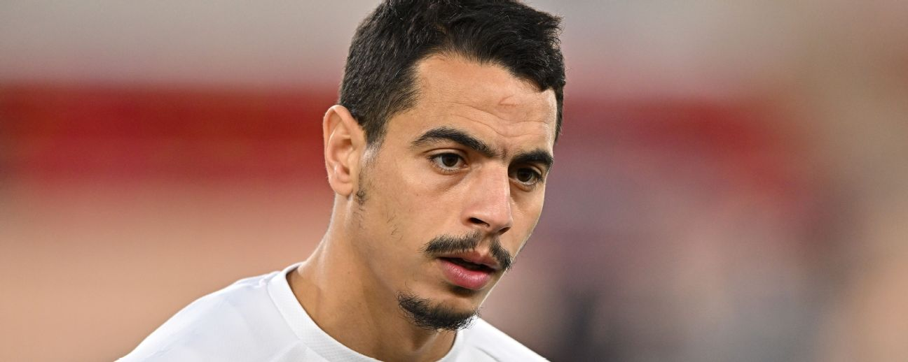

위삼 벤 예데르
뛰어난 위치 선정과 골 결정력을 갖춘 스트라이커로, 박스 안에서의 마무리 능력이 팀 공격의 핵심이다.
AS 모나코는 모나코 공국을 연고로 하는 리그 앙의 강호로, 젊은 선수 육성과 공격적인 전술 운영으로 잘 알려진 팀이다.
빠른 공격 전개와 전환 속도를 바탕으로 경기를 주도하며, 유럽 대항전 경험을 갖춘 경쟁력 있는 스쿼드를 보유하고 있다.
뛰어난 위치 선정과 골 결정력을 갖춘 스트라이커로, 박스 안에서의 마무리 능력이 팀 공격의 핵심이다.
중원에서 왕성한 활동량과 볼 운반 능력을 바탕으로 공수 연결고리 역할을 수행하는 핵심 미드필더다.